방송통신산업기사 (2005-03-20 기출문제)
1과목: 디지털 전자회로
1. 궤환 증폭기의 이득(폐루프 이득)에 관한 식은? (단, A : 기본 증폭도, Af : 궤환 증폭도, β: 궤환율) (보기 오류로 현재 복원중입니다. 보기 내용을 아시는 분들께서는 오류 신고를 통하여 보기 작성 부탁 드립니다. 정답은 1번입니다.)
- 복원중
- 복원중
- 복원중
- 복원중
(정답률: 알수없음)

2. Gray code 0111을 binary code로 변환하면?
- 0100
- 0110
- 0101
- 0111
(정답률: 알수없음)
3. 다음 RL회로에서 SW를 닫는 순간 기전력이 E일 때 t초 후에 흐르는 전류(i)는?
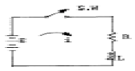
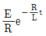
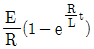
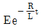
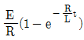
(정답률: 알수없음)
4. 다음 회로의 Gate는?
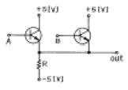
- AND
- OR
- NAND
- NOR
(정답률: 알수없음)
5. AM 변조에서 발생하는 측파대의 수는?
- 1
- 2
- 3
- 무한대
(정답률: 알수없음)
6. A, B 를 입력으로 하는 반가산기의 합 S 에 대한 출력 논리식으로 틀린 것은?
- S = A + B
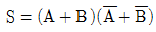
- S = A × B
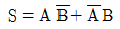
(정답률: 알수없음)
7. 그림과 같은 이상적인 연산 증폭기의 입력에 단위 계단 함수인 전압을 인가할 때 출력에 나타나는 전압파형은?
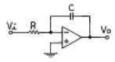
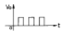
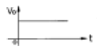
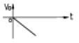
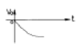
(정답률: 알수없음)
8. 변조도 50%의 진폭변조에서 반송파 평균전력이 500[㎽]일 때 피변조파의 평균전력은 약 얼마인가?
- 523[㎽]
- 543[㎽]
- 563[㎽]
- 583[㎽]
(정답률: 알수없음)
9. TTL에 비교하여 C-MOS 집적회로의 특징이 아닌 것은?
- 소비전력이 적다.
- 잡음여유도가 높다.
- 동작속도가 빠르다.
- 폭넓은 전원전압에서 동작이 가능하다.
(정답률: 알수없음)
10. 그림과 같은 회로에 step전압을 인가하면 출력 전압은? (단, C는 초기 충전되어 있지 않은 상태이다.)
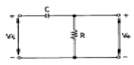
- 같은 모양의 step 전압이 나타난다.
- 아무 것도 나타나지 않는다.
- 0부터 지수적으로 증가한다.
- 처음엔 입력과 같이 변했다가 지수적으로 감소한다.
(정답률: 알수없음)
11. 회로에서 Si 다이오드 양단에 걸리는 전압 VD는 약 몇[V]인가?
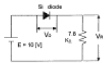
- 10.7
- 9.3
- 0.7
- 0.2
(정답률: 알수없음)
12. 다음 논리 IC 중 전력소모가 가장 적은 것은?
- TTL
- ECL
- CMOS
- DTL
(정답률: 알수없음)
13. 평형 변조회로의 출력에 나타나지 않는 것은?
- 하측파대
- 상측파대
- 상하측파대
- 반송파
(정답률: 알수없음)
14. 음과 같은 멀티플렉서 회로에서 제어입력 A와 B가 각 각 1일 때 출력 Y의 값은?
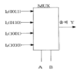
- 0011
- 0110
- 1001
- 1010
(정답률: 알수없음)
15. 그림의 논리회로에서 출력 X 의 논리식은?
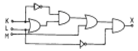
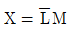
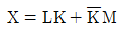
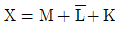
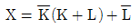
(정답률: 알수없음)
16. 윈브리지(Wien bridge) 발진회로에 관한 설명이 틀린 것은?
- 증폭기, R 및 C로 간단히 회로를 구성할 수 있다.
- 발진 주파수가 비교적 안정적이다.
- 발진 주파수의 가변이 용이하지 않다.
- 저주파 발진기 등에 많이 쓰인다.
(정답률: 알수없음)
17. 그림과 같은 회로에서 V1 = V2 = 20[V]이면 Vo는? (단, 각 다이오드는 이상적인 특성을 갖는다.)
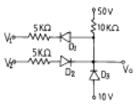
- 50[V]
- 40[V]
- 30[V]
- 20[V]
(정답률: 알수없음)
18. 크리스탈이 500[kHz]에서 공진하고 있다. 이 주파수에 대한 등가 인덕턴스가 4[H], 등가 커패시턴스가 0.0427[pF], 등가 저항이 10[㏀]이라 할 때, 이 크리스탈의 Q 값은 약얼마인가?
- 1513
- 1457
- 1318
- 1256
(정답률: 알수없음)
19. 그림과 같이 구성한 회로는 어떠한 작용을 행하는가?
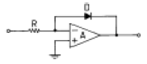
- 대수증폭
- 가산증폭
- 미분연산
- 적분연산
(정답률: 알수없음)
20. 다음 중 그 값이 작을수록 좋은 것은?
- 증폭기 바이어스 회로의 안정계수
- 차동 증폭기의 동상신호 제거비(CMRR)
- 증폭기의 신호대 잡음비
- 정류기의 정류효율
(정답률: 알수없음)
2과목: 방송통신 기기
21. 다음 MPEG DATA구조에서 가장 범위가 큰 것은?
- 블록
- 슬라이스
- 픽쳐
- GOP
(정답률: 알수없음)
22. 다음 TV 방송 System을 구성하는 장비 가운데 송신소에서만 사용하는 장비는 어느 것인가?
- 동기신호 발생기
- VMU
- TSL
- STL
(정답률: 알수없음)
23. 정지위성통신에서 다원접속을 회선할당면에서 분류할 때 이에 속하지 않는 것은?
- 고정할당방식
- 요구할당방식
- 개방할당방식
- 임의접속방식
(정답률: 알수없음)
24. 영상편집방식이 아닌 것은?
- 오프라인(off-line) 방식
- 온라인(on-line) 방식
- 자동편집
- 코드편집
(정답률: 알수없음)
25. 디지털 TV 신호측정에서 영상신호의 윤곽부분이 왜곡되어 흐려지거나 채널간 상대진폭과 상대 타이밍을 측정하기 위해 사용하는 신호는?
- COLOR BAR , BOWTIE
- EDH(ERROR DETECTION HANDLING)
- PATHOLOGICAL TEST SIGINAL
- JITTER
(정답률: 알수없음)
26. 우리나라의 무궁화위성 방송시스템에 관한 설명 중에서 틀린 것은?
- 방송위성은 정지궤도 상에 놓여 있다.
- 한 채널이 점유하는 주파수 대역폭은 6[MHz]이다.
- 위성에서 지상으로의 신호 전송을 위해 12[GHz]대의 반송파를 이용하고 있다.
- 지상의 송신기에서 음성 및 영상의 합성신호는 FM 변조되어 위성으로 송신된다.
(정답률: 알수없음)
27. TV 영상신호레벨을 IRE로 표시할 때 휘도신호의 최대값은?
- 50 IRE
- 0 IRE
- 100 IRE
- -40 IRE
(정답률: 알수없음)
28. 지상파 TV방송에서 1개 채널의 대역폭은 얼마인가?
- 12[MHz]
- 8[MHz]
- 6[MHz]
- 4[MHz]
(정답률: 알수없음)
29. 수퍼헤테로다인 라디오의 중간 주파수가 현재 455[kHz]로 조정되어 있다. 이 라디오를 이용하여 710[kHz]의 방송신호를 수신하고자 한다면 이 때 국부발진기의 발진 주파수는 얼마로 하여야 하는가?
- 710[kHz]
- 955[kHz]
- 1165[kHz]
- 1620[kHz]
(정답률: 알수없음)
30. 주파수 변환기로서 반드시 갖취야 할 성능이 아닌 것은?
- 발진주파수가 안정해야 한다.
- 고조파 왜곡이 적어야 한다.
- 변환대역외 감쇄량이 높아야 한다.
- 출력레벨이 높아야 한다.
(정답률: 알수없음)
31. 다음 측정기 중 전송신호에서 C/N비를 측정하기 위한 가장 적합한 기기는?
- 네트워크 분석기
- 스펙트럼 분석기
- 잡음지수 측정기
- 오실로스코프
(정답률: 알수없음)
32. CATV 시스템의 네트워크 구성 형태 중 Tree & Branch형의 설명으로 옳지 않은 것은?
- 사용주파수 대역에 따라 수용채널이 유동적이다.
- CATV 시설을 구성하는 가장 기본적인 망 구성이다.
- 특정채널 접속을 위해 스크램블 해제 장치가 필요한 것도 있다.
- 광케이블 설비에 적절한 형태이다.
(정답률: 알수없음)
33. NTSC 방송방식 휘도신호 Y는 0.3R 과 0.59G 그리고 얼마의 B 가 필요한가?
- 0.11
- 0.22
- 0.33
- 0.44
(정답률: 알수없음)
34. 다음 중 디지털 변조방식이 아닌 것은?
- 진폭 변조 키잉(ASK)
- 주파수 변이 키잉(FSK)
- 직교 진폭 변조(QAM)
- 진폭 변조(AM)
(정답률: 알수없음)
35. 제1단의 잡음지수 F1=10, 이득 G1=10, 제2단의 잡음지수 F2=11, 이득 G2=2, 제3단의 잡음지수 F3=21, 이득G3=1 인 3단으로 구성된 증폭기의 종합잡음지수는?
- 11
- 12
- 21
- 22
(정답률: 알수없음)
36. 최근 TV수상기를 소형화, 경량화 하기 위해 종래의 브라운관과는 다른 다양한 형태의 디스플레이가 선보이고 있다. 액정기술을 이용한 LCD (Liquid Crystal Display) 기술도 그 중 하나인데, 다음 중에서 LCD에 관한 설명 중 틀린 것은?
- 소비전력이 낮다.
- 빛의 편광특성을 이용한다.
- 평판형 디스플레이의 실현이 가능하다.
- 자체적으로 빛을 내는 능동소자이다.
(정답률: 알수없음)
37. 현재 전세계적으로 사용되고 있는 아날로그 칼라 TV의 방식이 아닌 것은?
- NTSC
- PAL
- SECAM
- ATSC
(정답률: 알수없음)
38. 마이크의 지향성이 아닌 것은?
- 무지향성
- 쌍방향지향성
- 역방향지향성
- 단일지향성
(정답률: 알수없음)
39. AM방송에 관한 설명중 옳은 것은?
- 중파를 사용하므로 지표파로 전파 도달거리가 짧다.
- 송신용 안테나로 슈퍼턴스타일 안테나를 사용한다.
- 약전계에서도 전계강도의 변화에 따라 수신감도의 변화가 적다.
- 수신기 회로가 비교적 간단하고 방송역사가 가장 길다.
(정답률: 알수없음)
40. 다음은 마이크로파 중계방식 중 수신한 마이크로파를 중간 주파수로 변환한 뒤, 이를 다시 복조하여 본래의 신호로 환원시켜 이 신호를 증폭하여 재차 보통의 마이크로파 송신기와 동일하게 내보내는 방식으로 근거리 중계회선에 사용되는 방식은 무엇인가?
- 무급전 중계방식
- 헤테로다인 중계방식
- 검파 중계방식
- 직접 중계방식
(정답률: 알수없음)
3과목: 방송미디어 개론
41. CATV방송에서 SO와 OTR까지의 최초로 연결하는 초간선에 사용되는 전송 Cable은?
- 동축 CABLE
- 평행 2선식 CABLE
- 광섬유 CABLE
- 전력선 CABLE
(정답률: 알수없음)
42. 우리나라의 지상파 방송의 디지털화 기본 방식이 아닌 것은?
- 채널 대역폭은 6[MHz]이다.
- 영상신호 압축방식은 ZIP 기술이 이용된다.
- 음성신호 압축에는 Dolby AC-3 방식이다.
- 전송방식은 8-VSB방식이다.
(정답률: 알수없음)
43. 멀티미디어의 가상현실 시스템 구성요소 중 틀린 것은?
- 감각정보장치 - 글로브(특수장갑)
- 시각정보장치 - HMD
- 시각정보장치 - 마스터 암
- 청각정보장치 - 스피커
(정답률: 알수없음)
44. NTSC 칼라 TV 방식에서 R, G, B 삼원색으로부터 휘도신호 Y 와 색차신호 R-Y, B-Y 로 변환되어 사용하고 있다. 휘도신호 Y 가 바르게 표현된 식은?
- Y= 0.30 R ＋ 0.59 G ＋ 0.11 B
- Y= 0.70 R - 0.59 G - 0.11 B
- Y= 0.30 R - 0.59 G - 0.89 B
- Y= -0.30 R ＋ 0.41 G - 0.11 B
(정답률: 알수없음)
45. 뉴미디어 분류체계 중 방송계에 포함되지 않는 것은?
- AM 스테레오방송
- FM 다중방송
- CATV
- 영상전화
(정답률: 알수없음)
46. 멀티미디어의 특징에 해당되지 않는 것은?
- 상호작용성(interactivity)
- 통합성(integrity)
- 연결성(connectivity)
- 비밀성(security)
(정답률: 알수없음)
47. 다음 중 케이블 TV와 관계가 없는 것은?
- SO(System Operator)
- PP(Program Provider)
- 종합유선방송
- TCP/IP
(정답률: 알수없음)
48. 지상파 디지털 TV 방송규격의 ATSC 표준 요구사항이 아닌 것은?
- 아날로그 서비스(NTSC)와 동시방송
- 멀티반송파를 이용한 SFN(Signal frequency network)구성
- 고음질
- 고화질
(정답률: 알수없음)
49. 우리나라의 아날로그 음성다중방송의 방식은?
- AM-FM방식의 서브캐리어방식
- FM-FM방식의 서브캐리어방식
- 2 캐리어방식
- 4캐리어방식
(정답률: 알수없음)
50. 비디오텍스의 화상정보 표현방식이 아닌 것은?
- 알파모자이크
- 알파지오메트릭
- 알파포토그래픽
- 알파스캔그래픽
(정답률: 알수없음)
51. 광섬유 케이블은 물질 사이에서 일어나는 빛의 어떤 성질을 이용한 것인가?
- 전반사
- 회절
- 파동성
- 입자성
(정답률: 알수없음)
52. 다음 중 ATM의 특성과 가장 관계가 없는 것은?
- 여러개의 서로 다른 비트율을 요구하는 서비스를 효과적으로 제공 할 수 있다.
- 신호대역이 차지하는 대역폭을 효과적으로 감당할 수 있다.
- PDH 기본계위를 활용하므로 기존 전화망과의 접속을 용이하게 할 수 있다.
- 가상회선, 가상채널로 망관리를 효율적으로 운영할 수 있다.
(정답률: 알수없음)
53. TV 송신 안테나를 지상고가 높은 곳에 설치하는 주된 이유는?
- 수신지역을 넓게하기 위해서
- 위험하여 사람의 접근을 방지하기 위해서
- 송신기의 출력을 높이기 위해서
- 환경적으로 업무에 집중하기 위해서
(정답률: 알수없음)
54. 고품위 텔레비전(HDTV)의 주사선 수는?
- 525 개
- 625 개
- 1125 개
- 2⑤0 개
(정답률: 알수없음)
55. 다음 중 시각매체의 종류가 아닌 것은?
- 동영상
- 문자
- 화상
- 음향
(정답률: 알수없음)
56. 멀티미디어 및 하이퍼미디어의 정의, 부호화원칙, 시스템 요구사항, 오브젝트 클래스를 이용한 부호화표현 등을 목적으로 하는 표준화 그룹은?
- MPEG-1
- MPEG-2
- MPEG-4
- MHEG
(정답률: 알수없음)
57. CCIR 601 코딩시스템(coding system)의 디지털 휘도신호와 색차신호가 아닌 것은?
- Y
- G
- Cr
- Cb
(정답률: 알수없음)
58. NTSC방식 TV의 초당 적당한 프레임 수는?
- 15
- 30
- 60
- 25
(정답률: 알수없음)
59. 다음 중 오디오 압축부호화 방식이 아닌 것은?
- ECC
- MPEG/layer3
- Dolby AC-3
- MUSICAM
(정답률: 알수없음)
60. CATV 가입자 인입전송로에 주로 사용되는 동축케이블의 손실값은 주파수에 따라 어떻게 변하는가?
- 주파수에 정비례
- 주파수의 자승에 비례
- 주파수에 반비례
- 주파수의 평방근에 비례
(정답률: 알수없음)
4과목: 전자계산기 일반 및 방송설비기준
61. 마이크로 프로세서에서 연산처리 한 후 연산 결과의 상태를 표시하는 레지스터는?
- 범용 레지스터
- 플레그 레지스터
- 콘트롤 레지스터
- 인덱스 레지스터
(정답률: 알수없음)
62. 10진수 738에 대한 BCD 코드(binary coded decimal)는?
- 0111 0011 1000
- 1110 0011 1000
- 1010 0111 0011
- 0010 1110 0010
(정답률: 알수없음)
63. 다음 선형리스트 중에서 데이터의 입력순서와 출력순서가 바뀌는 것은?
- queue
- stack
- FIFO
- circular queue
(정답률: 알수없음)
64. 고급언어를 기계어로 바꾸어 주는 역할을 하는 것은?
- 운영체제(OS)
- 어셈블러
- 컴파일러
- 목적프로그램
(정답률: 알수없음)
65. 프로그램 카운터가 명령 번지 부분과 더해져서 유효 번지가 결정되는 주소지정 방식은?
- 상대 번지 모드
- 간접 번지 모드
- 인덱스 번지 모드
- 베이스 레지스터 번지 모드
(정답률: 알수없음)
66. 기억장치의 액세스타임(Access time)표현이다. 1[㎲]는 몇 초인가?
- 10-3
- 10-6
- 10-9
- 10-12
(정답률: 알수없음)
67. 오퍼레이팅 시스템의 성능평가 중 데이터 처리를 위하여 시스템이 필요하게 되었을 때 시스템을 어느 정도 빨리 사용할 수 있는가를 나타내는 것은?
- 처리능력
- 응답시간
- 사용가능도
- 신뢰도
(정답률: 알수없음)
68. 다음 중 정보의 개념을 하위 개념에서 부터 상위 개념으로 나열한 것은?
- 필드(Field) → 레코드(Record) → 파일(File) → 문자(Character)
- 레코드(Record) → 파일(File) → 필드(Field) → 문자(Character)
- 문자(Character) →필드(Field) → 레코드(Record) →파일(File)
- 파일(File) → 문자(Character) → 필드(Field) → 레코드(Record)
(정답률: 알수없음)
69. IRG(Inter Record Gap)로 인한 기억공간의 낭비를 줄이기 위하여 Physical Record 를 만드는데 필요한 것은?
- Paging
- Buffering
- Mapping
- Blocking
(정답률: 알수없음)
70. 인쇄물이나 이미지에 빛을 투시해 반사되는 광선의 양적차이인 강약을 검출하여 문자를 인식, 판독하는 장치는?
- Scanner
- ORT
- OCR
- MICR
(정답률: 알수없음)
71. 정보통신공사업자의 성실의무 사항이 아닌 것은?
- 정보통신설비의 품질과 안전을 확보
- 공사 및 용역에 관한 법령을 준수
- 설계도서 등에 따라 성실히 그 업무를 수행
- 도면과 같게 하거나 설계를 마음대로 수정 또는 기준을 정할 수 있을 것
(정답률: 알수없음)
72. 방송위원회의 결격 사유가 아닌 것은?
- 정당법에 의한 당원
- 중계유선방송사업에 종사하는 자
- 금치산자 또는 한정치산자
- 교육공무원
(정답률: 알수없음)
73. 다음 중 방송국의 개설 허가권자는?
- 문화관광부장관
- 정보통신부장관
- 방송위원회 위원장
- 무선국관리사업단장
(정답률: 알수없음)
74. 특정 방송분야의 방송프로그램을 전문적으로 편성하는 것을 무엇이라 하는가?
- 방송편성
- 종합편성
- 특수편성
- 전문편성
(정답률: 알수없음)
75. 다음 중 방송법상 방송의 공적책임에 속하지 아니하는 것은?
- 방송은 인간의 존엄과 가치 및 민주적 기본질서를 존중 하여야 한다.
- 방송에 의한 보도는 공정하고 객관적이어야 한다.
- 방송은 타인의 명예를 훼손하거나 권리를 침해하여서는 아니된다.
- 방송은 범죄 및 부도덕한 행위나 사행심을 조장하여서는 아니된다.
(정답률: 알수없음)
76. 정보통신공사업법에서 규정하고 있는 공사의 구분이 아닌 것은?
- 방송설비공사
- 통신설비공사
- 정보설비공사
- 선로공사
(정답률: 알수없음)
77. 다음 중 방송국 개설허가 심사사항이 아닌 것은?
- 신청인이 설립중인 법인인 경우에는 당해 법인의 설립이 확실한지의 여부
- 연주소시설의 보유 여부
- 방송국의 시설설치계획이 합리적인지의 여부
- 방송국을 운용할 수 있는 자본적 능력의 보유 여부
(정답률: 알수없음)
78. 다음의 용어 정의가 뜻하는 것은?
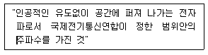
- 전파
- 주파수 분배
- 주파수 지정
- 무선
(정답률: 알수없음)
79. 방송국설비에 있어서 공중선전력을 반송파전력(PZ)으로 표현하는 것은?
- J3E
- F3E
- C3F
- A3E
(정답률: 알수없음)
80. 무선설비의 안전시설에서 송신설비의 공중선등 고압전기를 통하는 장치는 사람의 보행 또는 기거하는 평면으로부터 얼마의 높이에 설치하여야 하는가?
- 1.5[m] 이상
- 2.5[m] 이상
- 3.5[m] 이상
- 5.5[m] 이상
(정답률: 알수없음)